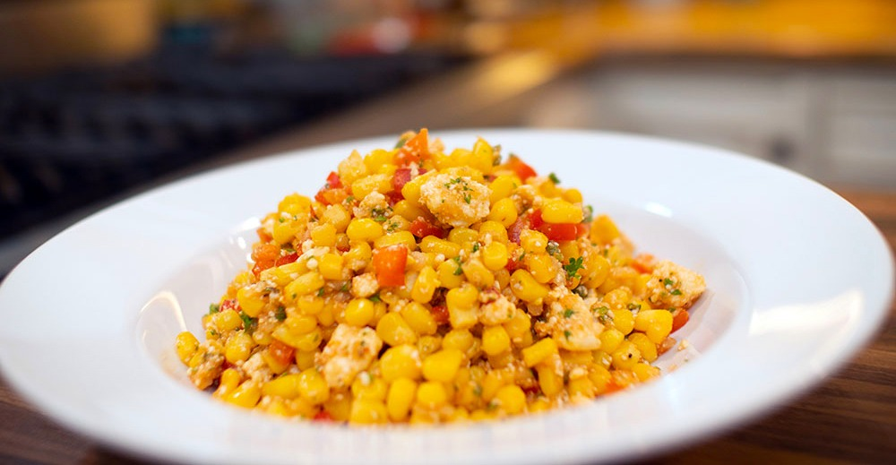
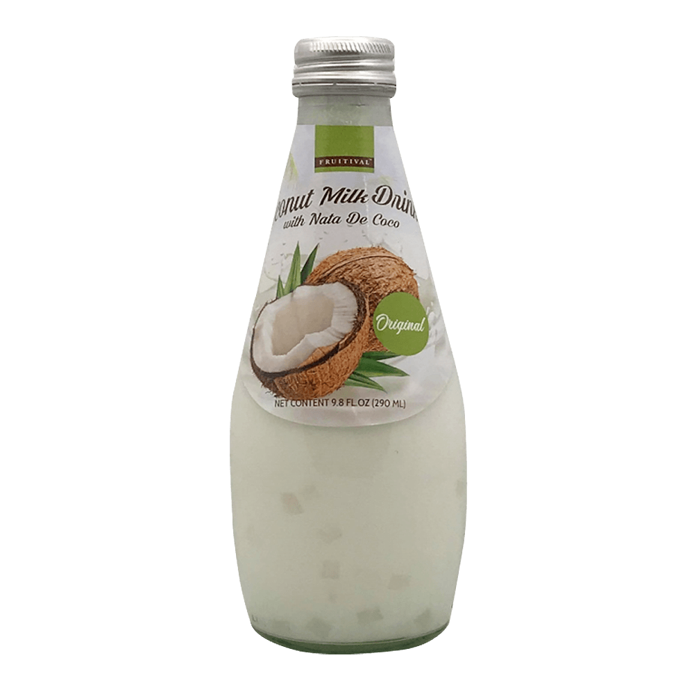

Products
 CORN COB
CORN COB- COCONUT SAUCE
 FISH SAUCE
FISH SAUCE
Ingredients
- 4 corn cobs
- 6-8 shrimps
- 100g long beans (cut 1 inch long)
- 100g cherry tomatoes (cut in half)
- 2 tsp minced garlic
- 2 small red chilies
- 2 tbsp peanuts
- 2 tbsp SUNLEE coconut sugar
- 2 tbsp SUNLEE fish sauce
- 1 boiled egg (cut in 4)
Directions
- In boiling water, cook shrimp until cooked well and set aside.
- In a large salad bowl, add corn cobs, tomatoes, and sliced long beans.
- Add the peanuts, chilies, and garlic to the salad, and toss them together.
- Pour the coconut sugar and fish sauce into the salad and mix well.
- Serve the salad with a boiled egg on top and enjoy!